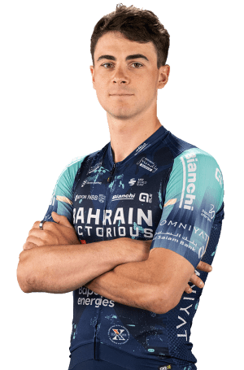

Matevž Govekar
Datos personales
- Matevž Govekar
- 17/04/2000
- Eslovenia
- Bahrain victorious
- 74

Datos equipos
- Bahrain victorious
- Tirol KTM Cycling Team
Temporada 2025
| Dato | Valor |
|---|---|
| Puntuación PCS | 114 |
| Puntuación UCI | 192 |
| Días de competición | 65 |
| Posición Ranking PCS | 497 |
| Posición Ranking UCI | 431 |
| Mejor resultado en carrera | 3º |
Multimedia
Equipo Bahrain victorious en la Vuelta Ciclista a España 2026.